HFMが期間を決めて開くキャンペーンです。開催期間中にボーナス口座へ最初に入金すると、入金した額と同じ額のボーナス（最大
たとえば
開催期間は HFMのキャンペーンページ に出ています。
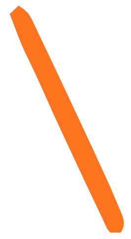
キャンペーンの中身本人確認まで終わっている人はSTEP 3から。
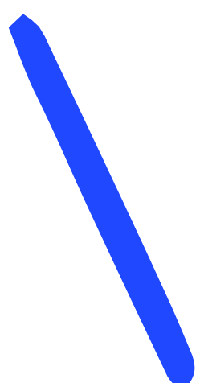
STEP 1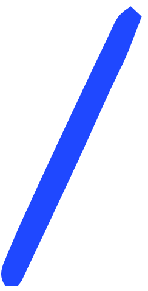
居住国・メールアドレス・パスワードを入力して「続行」
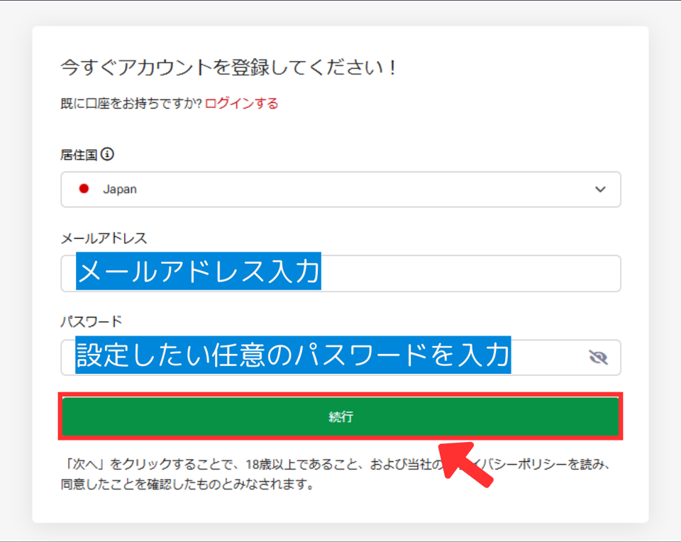
メールに届いた6桁のコードを入力して「続行」
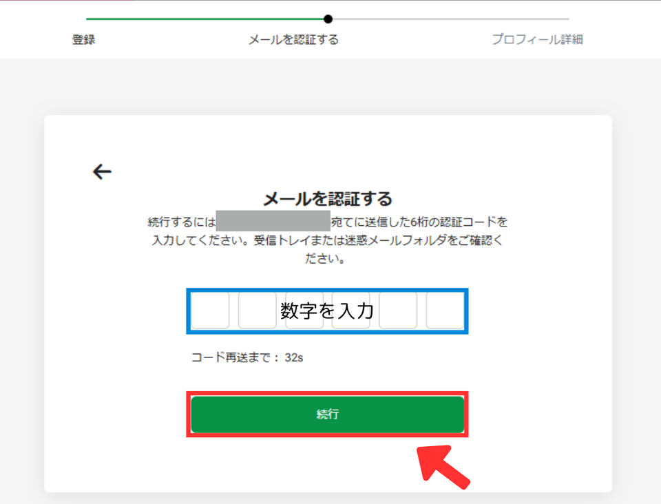
コードが見つからないときは、迷惑メールのフォルダも確認してください。
「アカウントの準備ができました」と出たら「こちらをクリック」
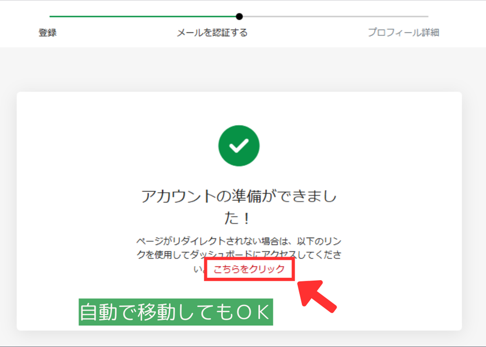
本人確認が終わる前に入金すると、ボーナスは付きません。
左のメニューの「登録を完了」
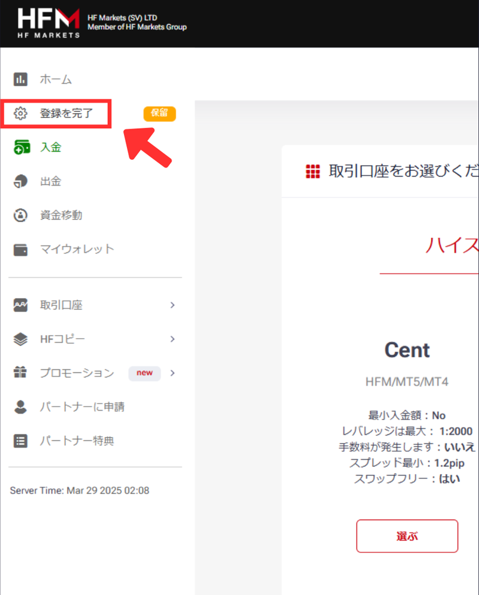
名前・電話番号・生年月日を入力して「続行」
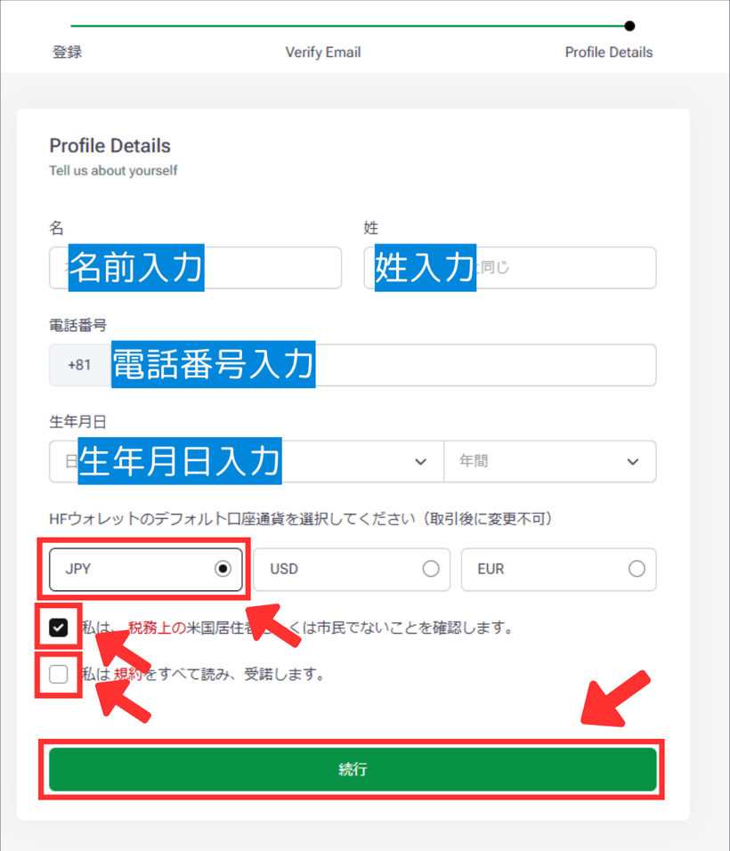
口座通貨は「JPY」を選び、下の2つにチェックを入れます。
住所などを入力し、取引経験を選んで「次へ」
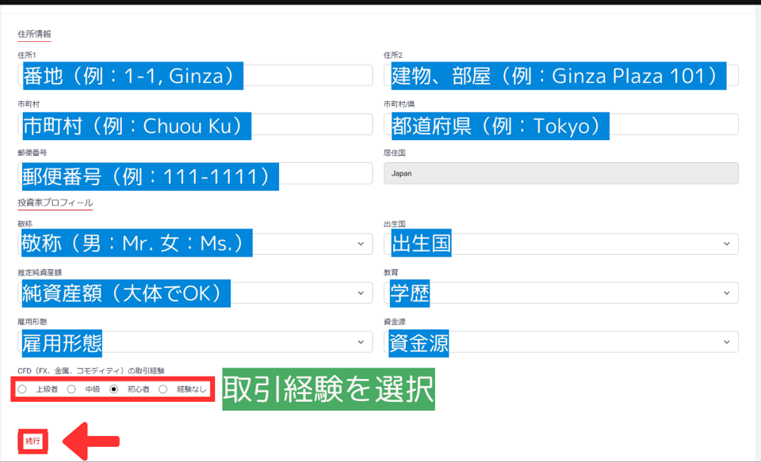
本人確認書類と住所確認書類を提出する
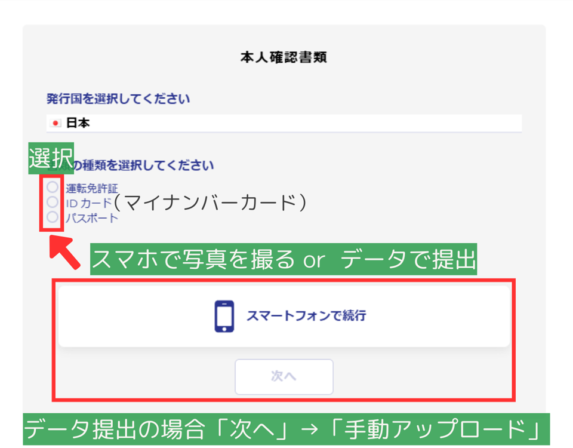
書類の種類（運転免許証・マイナンバーカード・パスポート）を選び、スマホで撮影するか、PCに保存した画像を送ります。PCから送るときは「次へ」→「手動アップロード」です。
住所確認書類も、同じように提出します。
一度作れば、次の開催からは同じ口座に入金するだけです（60日間、入出金も取引もないと口座は閉じられます）。
「100% Top-up Bonus」の「取引口座を開設」
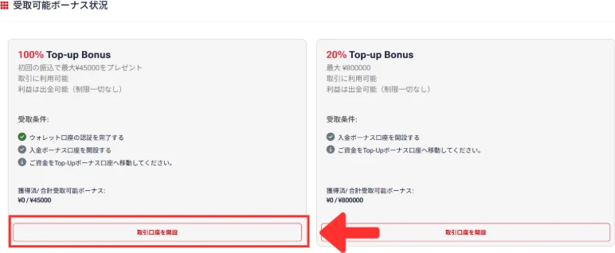
見当たらないときは、左のメニューの「取引口座」→「ライブ口座を開設」→「ボーナス口座」からも作れます。
「ボーナス口座」のTop-Up Bonusが選ばれているのを確かめて「→」
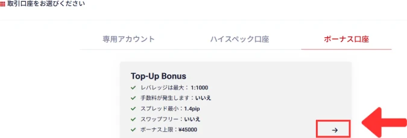
「MT4」を選び、レバレッジとパスワードを決め、利用規約にチェックを入れて「口座を開設」
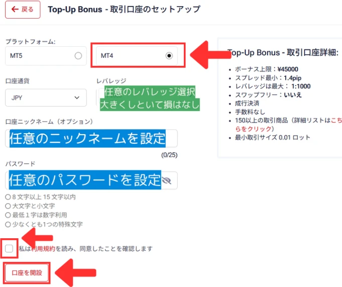
パスワードはMT4のログインに使うので、控えておいてください。
口座番号とサーバーが出たら完了
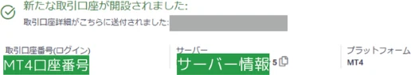
同じ内容がメールでも届きます。
開催期間中に入金してください。ボーナス口座にお金が入ると、すぐにボーナスが付きます。
左のメニューの「入金」
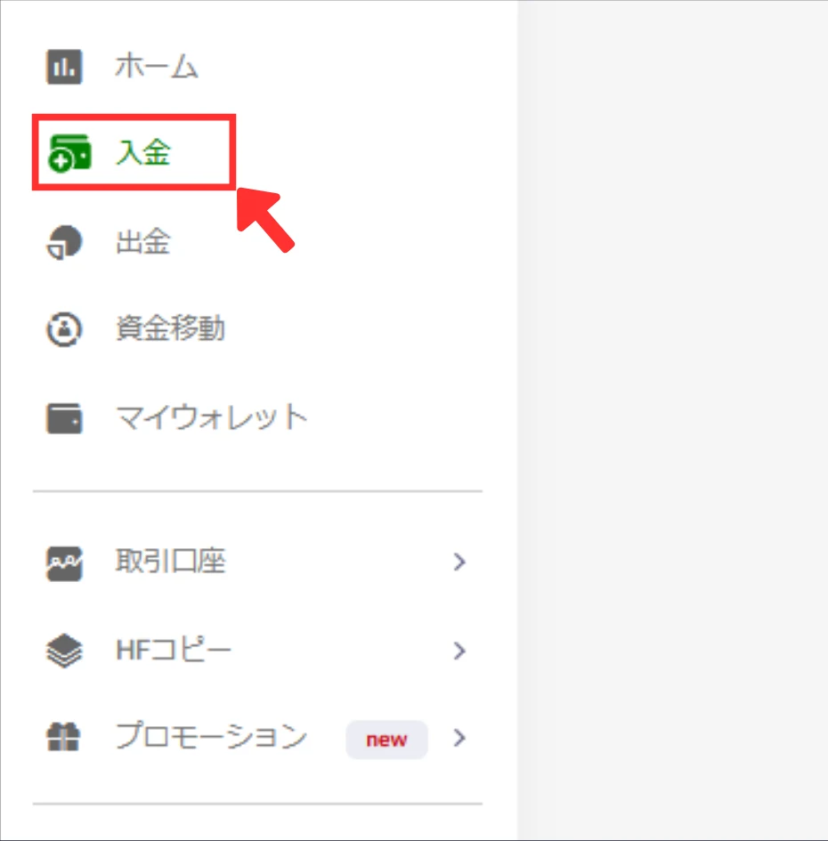
入金先がボーナス口座の番号になっているのを確かめ、「銀行送金」→「Local Bank Transfer (A)」
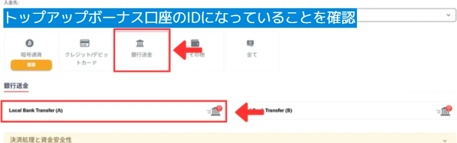
Local Bank Transfer (A) は国内の銀行から振り込む方法で、手数料は無料です。着金までの時間は、画面の表示では10分から最大12時間です。
金額と振込名義（カタカナ）を入れて「入金」
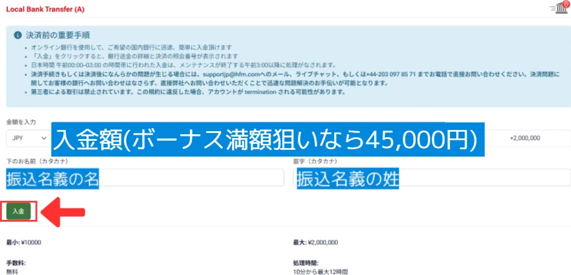
ボーナスを満額もらうなら、金額は45,000円です。この方法で入金できるのは
右上の更新ボタンを押して、金額が変わっていれば着金
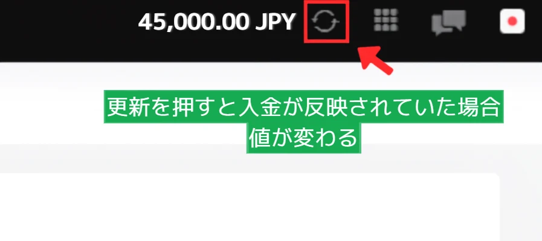
お金がウォレット（お財布）に入ったときは、ボーナス口座へ移す
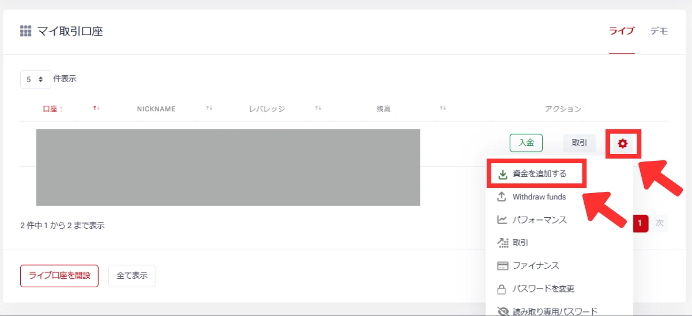
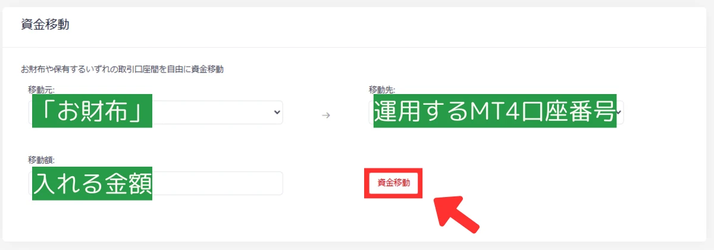
「マイ取引口座」でボーナス口座の歯車→「資金を追加する」。移動元を「お財布」、移動先をボーナス口座の番号にして「資金移動」を押します。
「マイ取引口座」でボーナス口座の「取引」→「更に表示」
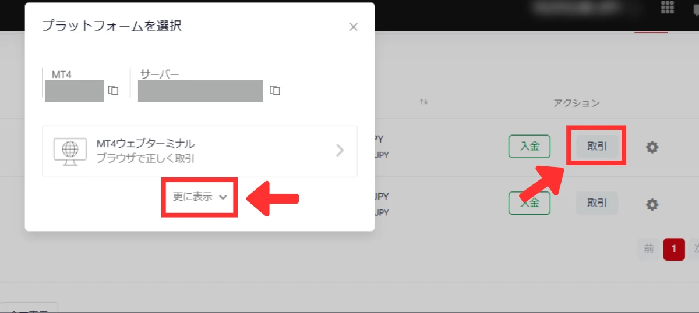
MT4の「ファイル」→「取引口座にログイン」で、口座番号・パスワード・サーバーを入れる
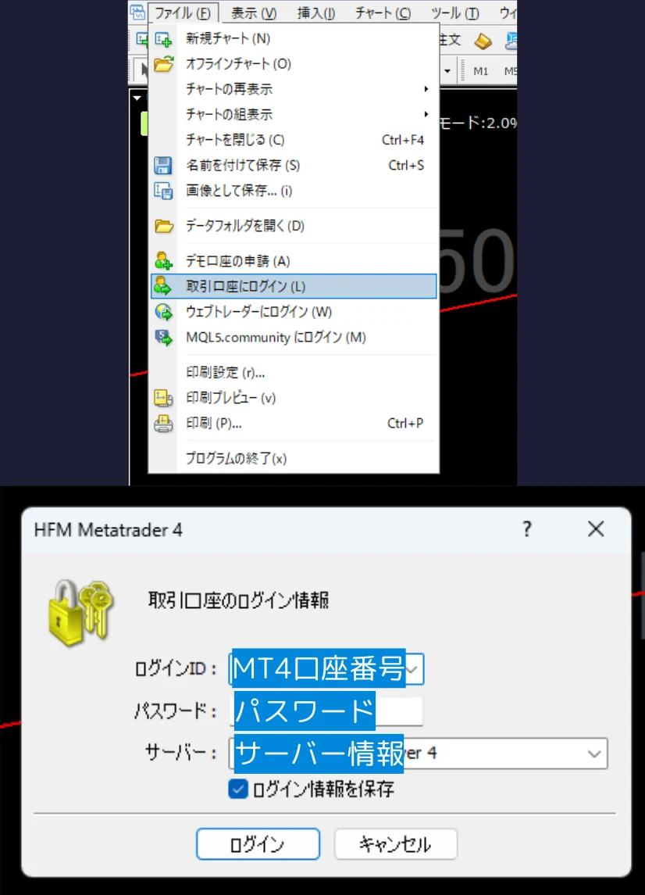
口座番号とサーバーは、STEP 3 の最後の画面かメールで確かめられます。これで取引を始められます。
もらえます。「初回入金」は、はじめてHFMに登録する人という意味ではなく、開催期間中の最初の入金のことです。ログインして、ボーナス口座に入金してください。
作り直さなくて大丈夫です。一度作ったTop-Up Bonus口座に入金すれば、次の開催でも対象になります。ただし、60日間入出金も取引もないと口座は閉じられるので、そのときはSTEP 3でもう一度作ってください。
45,000円に対して100%のボーナス（45,000円）が付きます。上限を超えた5,000円分は対象外です。
最初の45,000円に100%（45,000円）、あとの20,000円に20%（4,000円）のボーナスが付きます。
10,000円に100%（10,000円）のボーナスが付きます。100%になるのは最初の入金だけなので、そのあとの入金は20%のボーナスになります。
ボーナスが付くのはTop-Up Bonus口座だけです。ほかの口座に入金するとボーナスは付かないので、入金先の口座番号を確かめてから入金してください。
1回の入金に、いくつものボーナスが同時に付くことはありません。
必要です。本人確認が終わっていないと、ボーナス口座に入金してもボーナスは付きません。電話番号の確認も必要です。入金の前に済ませておいてください。
ボーナスは取引の証拠金として使え、そこで出た利益と自分で入金したお金は出金できます。ボーナスそのものは出金できません。
出金すると、出金した割合と同じだけボーナスが減ります（例：出金できるお金の半分を出すと、ボーナスも半分になる）。